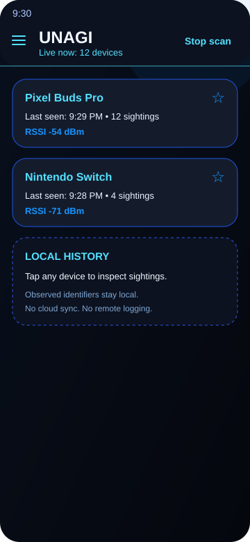

What the app does
- Scans nearby Bluetooth Classic and BLE devices in the foreground.
- Shows a sortable list of current observations with names, signal strength, and metadata.
- Lets you tap a device to inspect its local sighting timeline after relaunch.
"Only by achieving true unagi can you be prepared for ANY DANGER that may befall you."Unknown
unagi is a local-first Android app for spotting nearby Bluetooth devices, keeping a durable on-device history, and making scan state obvious when Bluetooth is off or permissions are denied. No cloud. No remote logging by default.
Observed device identifiers are treated as observations, not ground truth identity. Addresses can rotate. Names can drift. unagi keeps the MVP intentionally pragmatic: clear permission states, local history, and opt-in active scanning instead of silent always-on background work.

The website links to the current versioned build, and scripts/stage-apk updates that APK filename on every release.
unagi is built without Android Studio. The expected path is JDK 17, Android SDK command-line tools, Gradle wrapper, and a staged debug APK for the site.
scripts/setup-android-sdk.adb devices sees your phone../gradlew assembleDebugscripts/stage-apk